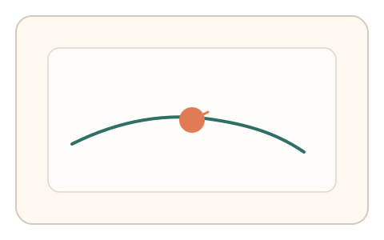
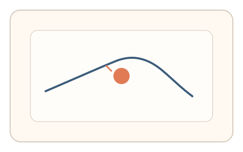
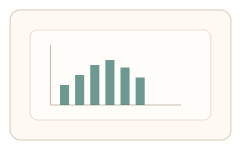

#6
生物肌肉与鼠标运动
已扩展
反射性躲避
在追踪任务中插入移动干扰点，利用反射性纠偏的时延与幅度分布区分人机。
概念原文
轨迹中随机出现移动干扰点，用户需要即时避让并保持目标方向，考察反应时分布与短时纠偏幅度。
把“反射性纠偏”作为核心验证要素，压制脚本的零延迟与过度平滑。
研究背景
人类对突发视觉刺激会产生反射性躲避反应，具有典型的反应时窗口与纠偏幅度分布。将随机干扰点引入追踪任务，可捕捉短时反射性纠偏特征，从而抑制脚本的零延迟与过度平滑行为。
核心机制
- 在目标路径中随机插入移动干扰点。
- 要求用户保持目标方向并快速避让。
- 记录反应时分布、纠偏幅度与回归速度。
- 采用多次插入构建稳定统计特征。
用户流程
- 步骤 1：用户开始追踪主路径。
- 步骤 2：随机出现干扰点，用户即时避让并回归。
- 步骤 3：系统评估反应时与纠偏曲线。
判定信号
干扰出现后的反应时分布
人类反射性反应存在稳定时间窗口。
纠偏幅度与回归速度
真实操控会出现短时过冲与回拉。
判定逻辑
以干扰事件为锚点计算反应时与纠偏幅度分布，结合回归速度判断是否符合人类反射模式；零延迟或过度平滑判异常。
对抗面
- 脚本提前预测干扰点并规划避让路径
- 回放已采集的避让轨迹
防御与缓解
- 随机化干扰点出现位置与速度
- 加入短时不可预测的轨迹偏移
- 结合微抖动与速度波形作为辅判
可达性与风险
提供较慢干扰速度或替代任务，避免对反应速度受限用户造成误拒。
- 高频干扰可能带来视觉负担
- 设备延迟会影响反应时准确性
可视化状态

状态 1：主路径追踪
用户沿主路径移动，准备响应干扰。

状态 2：干扰避让
干扰点出现，用户即时躲避后回归。

状态 3：反应时判定
基于反应时与纠偏幅度进行判定。
参考资料
Reflex
说明反射性反应的生理基础。
Reaction time
说明反应时分布作为行为特征。